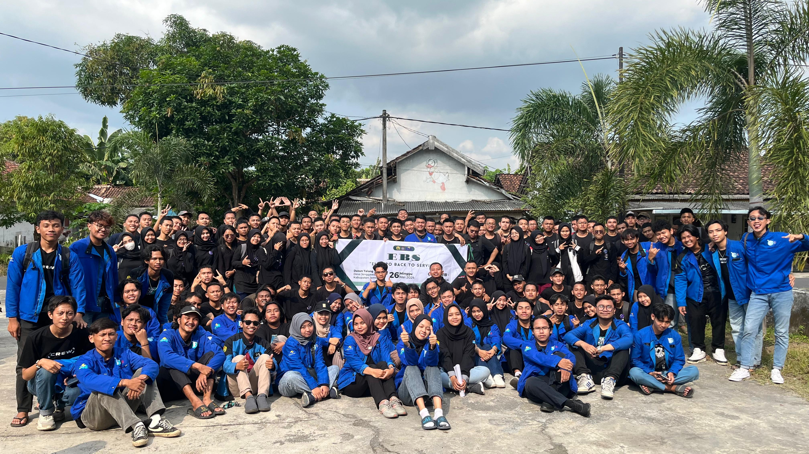
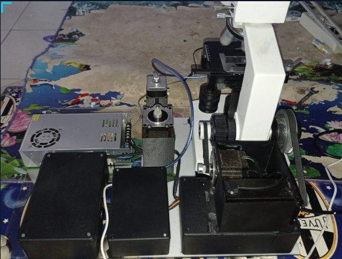
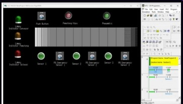

{kind=link}
{kind=link}
{kind=link}
Lokasi
Kota Madiun, Jawa Timur, Indonesia
Saya
Passionate about creating exceptional digital experiences that blend innovative design with functional development. Let's bring your vision to life.
Sarjana Teknik Elektro
Sarjana Teknik Elektro Universitas Jember (IPK 3,49/4,00) dengan pengalaman praktis di industri perkeretaapian nasional melalui program kerja praktik di PT. Industri Kereta Api (INKA) Persero.
Memiliki keahlian teknis di bidang desain instalasi listrik, sistem kendali otomatis, wiring diagram, desain CAD, serta penerapan algoritma Reinforcement Learning pada sistem kontrol fisik berbasis Raspberry Pi.
IPK / 4.00
Tahun Studi
Peran Organisasi
Software Dikuasai
Keahlian teknis dan non-teknis yang diasah melalui pendidikan, kerja praktik, dan pengalaman organisasi
Sarjana Teknik Elektro Universitas Jember dengan pengalaman praktis di industri perkeretaapian nasional. Berorientasi pada hasil dan berkomitmen untuk terus berkembang di bidang rekayasa kelistrikan dan sistem kendali.

Sarjana Teknik Elektro (IPK 3,49/4,00) dengan keahlian di desain instalasi listrik, sistem kendali otomatis, wiring diagram, dan CAD. Berpengalaman di industri perkeretaapian nasional melalui kerja praktik di PT. INKA.
Microsoft Office, SolidWorks, AutoCAD, EasyEDA, CX-One, Arduino IDE, Proteus, MATLAB
Universitas Jember
IPK: 3,49 / 4,00
PT. Industri Kereta Api (INKA) Persero – Divisi Teknologi, Departemen Electrical Design
Rekam jejak aktif berorganisasi dan berkepanitiaan selama masa studi — mengasah kepemimpinan, koordinasi tim, dan manajemen acara dari tingkat staf hingga ketua pelaksana.
Aktif di 17 kegiatan organisasi dan kepanitiaan selama 2022–2024, mulai dari staff magang hingga ketua pelaksana, mencakup kemahasiswaan teknis, pengembangan SDM, dan pengabdian masyarakat.
Universitas Jember
Himpunan Mahasiswa Teknik Elektro, Universitas Jember
Himpunan Mahasiswa Teknik Elektro, Universitas Jember
Himpunan Mahasiswa Teknik Elektro, Universitas Jember
Himpunan Mahasiswa Teknik Elektro, Universitas Jember
Himpunan Mahasiswa Teknik Elektro, Universitas Jember
Himpunan Mahasiswa Teknik Elektro, Universitas Jember
Himpunan Mahasiswa Teknik Elektro, Universitas Jember
Himpunan Mahasiswa Teknik Elektro, Universitas Jember
Universitas Jember
Himpunan Mahasiswa Teknik Elektro, Universitas Jember
Himpunan Mahasiswa Teknik Elektro, Universitas Jember
Himpunan Mahasiswa Teknik Elektro, Universitas Jember
Himpunan Mahasiswa Teknik Elektro, Universitas Jember
Himpunan Mahasiswa Teknik Elektro, Universitas Jember
Power Community (PORCOM), Universitas Jember
Layanan dan keahlian yang dapat saya tawarkan
Menawarkan kemampuan teknis di bidang desain kelistrikan, sistem kendali otomatis, dan pemrograman mikrokontroler — siap diterapkan dalam lingkungan industri maupun proyek nyata.
Instalasi listrik untuk bangunan residensial dan komersial sesuai standar keselamatan kelistrikan yang berlaku.
Perancangan wiring diagram, ladder diagram, dan schematic elektrikal untuk sistem industri maupun komersial.
Perancangan dan implementasi sistem kendali otomatis berbasis PLC, mikrokontroler, dan algoritma cerdas.
Pengecekan, diagnosa, dan perbaikan sistem serta peralatan kelistrikan yang mengalami gangguan.
Perencanaan dan pemasangan sistem PJU dan instalasi panel surya untuk kebutuhan energi terbarukan.
Konsultasi teknik elektro untuk perencanaan proyek, analisis sistem, dan pengembangan desain instalasi listrik.
Proyek-proyek teknik yang telah saya kerjakan selama masa studi, mulai dari instalasi energi terbarukan, sistem kendali PLC, hingga penerapan Reinforcement Learning pada hardware fisik.




Jangan ragu untuk menghubungi saya untuk diskusi, kolaborasi, atau peluang kerja
Saya terbuka untuk peluang kerja, kolaborasi proyek, maupun diskusi teknis seputar teknik elektro.
Kota Madiun, Jawa Timur, Indonesia
+6287725160973
taufiqharmansyah014@gmail.com
linkedin.com/in/mtaufiqh14/
Kirimkan pesan Anda dan saya akan segera merespons.